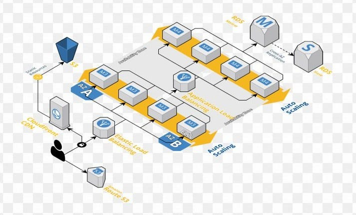

¿Qué es la Arquitectura?
La arquitectura puede variar ampliamente en estilo y enfoque, desde estructuras históricas y monumentales hasta diseños contemporáneos y sostenibles. A través de los siglos, la arquitectura ha evolucionado en respuesta a los cambios culturales, tecnológicos y ambientales.
La arquitectura es el arte y la técnica de concebir, diseñar y construir edificaciones y hábitats para las personas, tales como viviendas y espacios conmemorativos, de trabajo o de recreación. Se basa en tres principios fundamentales: belleza, firmeza y funcionalidad.El término proviene del griego antiguo y está formado por los vocablos archós (“jefe, guía”) y técton (“constructor”). En este sentido, la arquitectura es un reflejo de la civilización humana y testimonia sus transformaciones culturales y tecnológicas a lo largo de la historia. A través de ella, el ser humano no solo ha creado sus propios refugios, sus espacios sociales y sus ámbitos ceremoniales, sino que también ha configurado su entorno físico y cultural. Así, los diversos estilos y sistemas de la arquitectura reflejan las condiciones sociales y económicas, los modos de pensar y las ideas estéticas de una determinada época.
Las 4 ramas de la Arquitectura son: Arquitectura Civil, Arquitectura Industrial, Arquitectura Paisajista y Arquitectura Sostenible. Cada rama tiene sus propias características y áreas de enfoque, pero todas comparten el objetivo de crear espacios funcionales y estéticamente agradables.
Arquitectura de Software
Todo el mundo tiene una clara imagen mental cuando hablamos de arquitectura de aquella disciplina que se encarga de la planificación y diseño para la construcción de edificios y espacios de esparcimiento (como parques o monumentos), sin embargo, la arquitectura es referida al diseño y planificación a un nivel superior de una estructura a un nivel abstracto y a la toma de decisiones antes de pasar a su realización. La arquitectura, referida al software, es un concepto que surge ya en los años 60 y se refiere a una planificación basada en modelos, patrones y abstracciones teóricas, a la hora de realizar una pieza de software de cierta complejidad y como paso previo a cualquier implementación. De esta forma se dispone de una guía teórica detallada que nos permite entender cómo van a encajar cada una de las piezas de nuestro producto o servicio. Por tanto, en arquitectura llamamos patrón a cualquier solución general y reutilizable para problemas recurrentes en ingeniería del software en un contexto dado, son similares a los patrones usados en la programación, pero orientados específicamente a la estructura a un nivel superior y más genérico.
La arquitectura de software se refiere a la estructura fundamental de un sistema de software. Incluye la organización de los componentes del software, sus relaciones y los principios y patrones que guían su diseño y evolución. La arquitectura de software es esencial para asegurar que el sistema sea escalable, mantenible y eficiente.
Los arquitectos de software deben considerar una variedad de factores, como el rendimiento, la seguridad, la compatibilidad y la usabilidad, al diseñar la arquitectura. Además, deben tomar decisiones sobre los patrones de diseño y las tecnologías a utilizar, así como sobre cómo gestionar la evolución del software a lo largo del tiempo.
